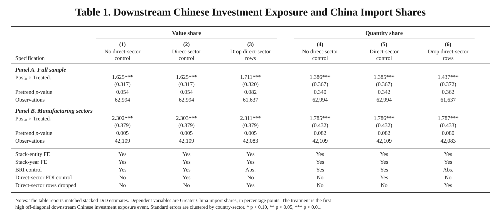
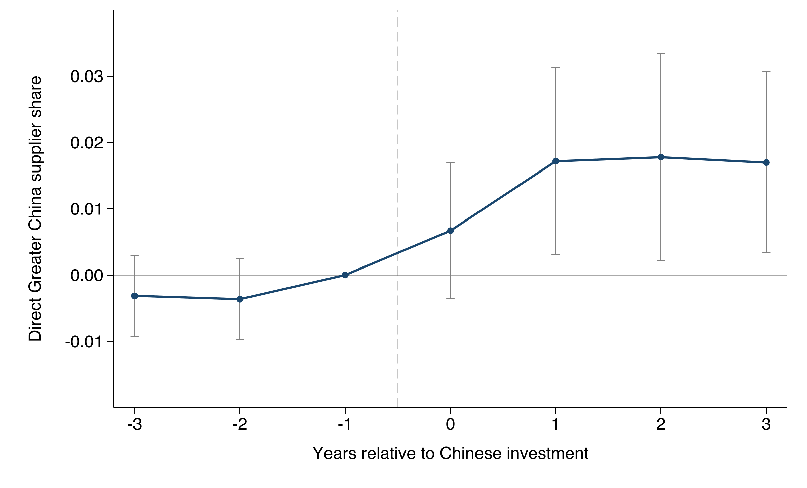
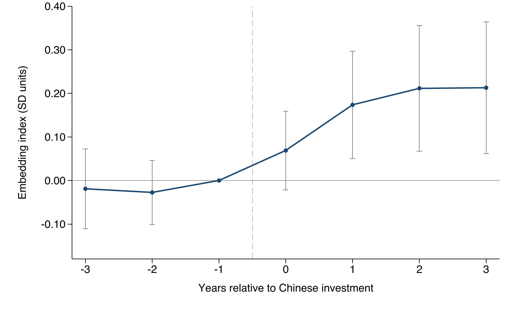
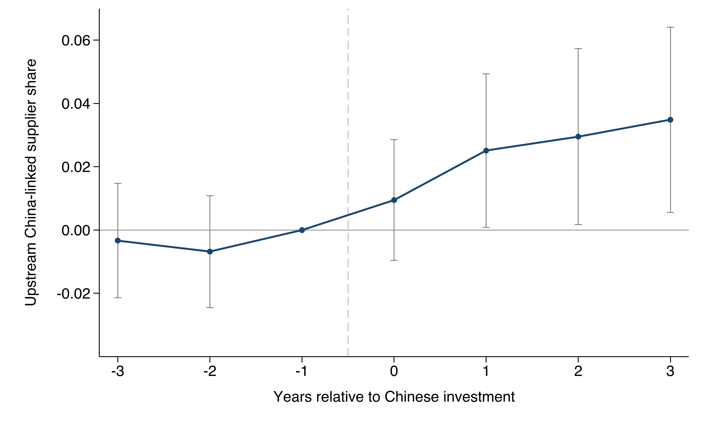

Going Overseas: FDI Decisions and Supply Chain Integration
Draft available on request.
Chinese outward FDI is followed by measurable reorientation of host-country supply networks toward Greater China.
Abstract
Can outward FDI draw host economies into the investing country’s supply network? This paper studies Chinese investment abroad and treats FDI not only as a movement of capital, but also as a potential channel through which sourcing relationships are reorganized. I link Chinese investment events to sector-level trade flows and firm-level production networks. At the sector level, I compare host-country supplier industries before and after Chinese investment enters their downstream customer industries, excluding same-sector Chinese investment from the exposure measure. Upstream sectors exposed to downstream Chinese investment in this way increase the quantity share of imports sourced from Greater China by 1.44 percentage points, with no evidence of differential pretrends. At the firm level, I distinguish direct supplier connections from broader network embedding. Investment recipients become more directly connected to Greater China suppliers. Beyond this direct channel, even after excluding recipients’ own Greater China suppliers, their surrounding supplier neighborhoods become more China-linked: a standardized measure of indirect China-linked supplier exposure rises by 0.17–0.21 control-pre-period standard deviations during the first three post-investment years. Comparable exposure to non-Greater-China foreign suppliers does not increase significantly. The evidence indicates that Chinese outward FDI is followed by a measurable reorientation of host-country supply networks toward China. Outward investment can therefore operate as a channel of supply-chain integration, extending China-linked sourcing beyond the boundaries of the investing affiliate itself and creating a potential source of demand for home-country upstream suppliers.
Main results




Presentations: AEA Annual Meeting, Trade and FDI session, Philadelphia, 2026; Georgetown University Trade Lunch; AEA Annual Meeting, ODE Graduate Student Research Award Session, Washington, DC, 2027 (scheduled).